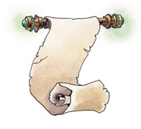

资料来源：费伦大陆信仰与神系介绍 Faiths & Pantheons
欧格马 Oghma （知识之神）
费伦神系 强大神力

别称：知识之王 The Lord of Knowledge，一切知识的装订者 Binder of What is Known
圣徽： 张开的卷轴

居住界域：知识之殿 House of Knowledge
阵营：绝对中立 N
神职：吟游诗人 bards，灵感 inspiration，创造 invention，知识 knowledge
信徒：艺术家，吟游诗人，制图师，发明家，学者，书记，法师
牧师阵营：任何 any
神域：媚惑 Charm，知识 Knowledge，幸运 Luck，旅行 Travel，诡术 Trickery
喜好武器：凡人之击 Mortal Strike（长剑 longsword）
欧格马的信徒时常讲述一则有关天地初创之时的神话－就在苏伦与莎儿创造了扥瑞尔世界（以及大地女神裳禔亚诞生）不久之后，有一位旅行者冒险地从极为遥远的国度来到此地。当这位旅者降临这个世界时，祂看见了整个世界浑沌不已，许多变换不停的概念都极度需要安顿。这位旅者在接下来的十亿年之中为每一个概念定义且为之命名。旅者赐下的名字产生了力量，将所有原本捉摸不定的变换概念全数固定，形成了物质化的自然世界。这位旅者就是欧格马，所有知识的装订者，祂为浑沌的世界带来秩序，并在扥瑞尔的古老诸神中得到荣耀的一席之地。
欧格马至今仍然掌握整个扥瑞尔世界中的构想。知识之王监控着所有的知识与灵感，决定一种知识与灵感是否得以流传后世（或是与发明者一起殒落）。就这一点而言，装订者扮演着一个明确的警世角色，因为祂在无尽的岁月中已经积累了数不清的经验。祂偏好保守观念的教条，希望不要再有任何新的想法去扰乱祂从创世以来所塑造出的巧妙平衡。尽管如此，欧格马表面上却仍表现出一副愉悦的风度，借着祂英俊的外表、巧妙的谈吐、以及无比的吸引力，即使是最激烈地反对祂想法的敌手也会被动摇。理念积极的神祇（像洛山达与欢乐女神莱尔拉 Lliira），时常反对欧格马那固执于坚守现状的观念，且认为装订者总是想借着那些巧妙的守旧说辞来操纵别人的想法。然而，所有的神祇（即使是最邪恶与无情的）都欣赏欧格马唱出的轻快曲调，以及祂那精湛的亚廷琴（yarting，一种吉他）演奏技巧。一般凡人对这位神祇的印象，就是欧格马那传奇般的音乐技巧与温和的态度。祂是吟游诗人的守护神，绝大多数人也都认为祂是各种创作灵感的源头，以及各种知识的保护者。许多贤者、法师、吟游诗人、以及依靠知识与音乐维生的人都敬拜欧格马，祂的名号在每个种族、社会阶层、以及职业之中都受到尊崇。
欧格马的牧师在每天早上祈祷以获得神术。每天他们都会执行两个被称为「一日之基础」（the Cornerstones of the Day）的仪式－前者是「装订」（the Binding），这是个在早上藉由书写神秘符号以安静祈祷的仪式；「规约」（the Covenant）则是在晚上举行，仪式中每个牧师都会共享各种智慧与音乐的作品，并分享新知识。仲夏（Midsummer）与盾会（Shieldmeet）是欧格马教会的圣日，这两天也是传统上订定新合约与协议的日子，许多人都挑选这两天重新确认旧有的或制定新的契约、契据、借据。当年幼的欧格马信徒达到20岁成年之时（或是其他非人类种族的成年之龄），当地的牧师会为其举行一个非公开的仪式，称为「命名」（the Naming），在仪式中牧师们会揭示这个年轻人的「真名」，一个象征这位生灵生命本质的秘密词汇。信徒们只有在私下对欧格马祈祷之时才会使用自己的真名，信徒们也绝对不会让其他人知道自己的真名。欧格马的信徒们相信，只要知道一个人的真名，就等于得到了控制那个人的力量，因此即使是最亲密的朋友或亲人也无法得知这项秘密。欧格马的牧师通常兼职吟游诗人，有时也会兼职法师或博学者。
历史/与众神的关系 History/Relationship：
大多数与欧格马有关的神话都可以追溯到人类最早的文明时期。有些神话宣称是欧格马为这个世界带来了可书写的文字，其他则宣称是装订者定义了所有的概念。虽然整个费伦大陆的学者们，都纠缠不休地争辩这些理论性假学问的可信度，不过近年来，每个人都相信祂是个古老的神祇，而且自从有人类文明起就已经就受到广泛的敬拜。欧格马与德奈尔（Deneir，文学与艺术之神）、密黎尔（Milil，咏唱之神）、贡德（Gond，工艺之神）一起被世人称为「知识与发明众神」。装订者与德奈尔以及密黎尔之间较为倾向主从关系，视后两者是祂负责保存推广知识的仆人。祂十分钦佩贡德的热忱与创造力，但也对奇迹带来者（Wonderbringer）促进工艺技术的无穷野心颇为不满，认为祂把革新的地位摆在内省之前。欧格马厌恶希瑞克、麦斯克、以及班恩（Bane，暴政之神），将这些邪恶的神祇们视为平衡秩序的最大威胁。
教义 Dogma：
知识就是一切（而构成知识源头的构想比知识更珍贵）。虽然知识没有重量，但是善用知识却可以搬动整座山脉。知识是人类所得到的最大恩赐，它的价值比凡人的劳力更高。知识是必须谨慎使用的伟大力量，将它隐藏绝对无法带来任何益处。不管一个新构想看起来有多么虚幻或者疯狂，都不要藏匿或掩盖它；要让所有人都能知道并审查它。凡信我之人皆不可杀害歌者，也不可帮助他人杀害歌者。信我者应当尽可能审慎地传播知识；也应当随时否认并消灭所有的虚伪、谣言、以及谎言。每年都至少要抄写或书写一段具有价值的轶闻，并将之广为流传。应当培养或资助吟游诗人、书记、以及作家。应当传布知识与真相，这样所有社会的广大民众才能了解更多。绝对不可传述任何虚假或不全的讯息。教导那些有意愿学习读写的人们（如果时间允许），不可对此收费。
牧师与神殿 Clergy & Temples：
欧格马的牧师被称为「命名者」（Namer）。祂的教会欢迎所有种族以及怀抱各种理念的人，教会内的牧师们都发誓遵从装订者的旨意，将自己的生命奉献给寻找、管理、与保护知识。教会的成员如果不是在神殿内过着如同隐居一般的生活（学究与贤者们则较常与大迭的书与卷轴住在一起），就是在各地到处游历并记录其所闻所见，定期回报教会。隶属教会的徒步旅行牧师与诗人都是深具好奇心与爱好冒险的人，且偶尔会与另一派学究信徒们发生理念上的争执。然而，这两派信徒的所做所为正好彼此互补，教派之间的理念不和也很少扩大成争吵与非难。
大多数的欧格马神殿都位于城市之中，祂的神殿就像图书馆一样，充满了研究知识的辅祭以及各式各样的书籍、地图、以及卷轴。许多信徒都以贩卖书写工具、提供抄写服务、以及贩卖地图（通常是卖给冒险者）维生。绝大多数的神殿中都有一个颇具规模的装订部门，使学究派的牧师们得以制作各种书籍与小册子，然后放进教会的图书部门之中。
教会的内部阶层目前发生了严重的党派斗争。在动荡之年以前，所有的信徒都遵从波坎普城（Procampur）的大长老柯伦˙寇德门特（Cullen Kordamant）指示，他是那时被所有教会认可的「欧格马代言人」。然而，寇德门特却在动荡之年的混乱时刻在自己的家中失踪，自此之后大多数的欧格马神殿就分裂成两个不同的党派。正统欧格马教会（位于波坎普城）认为坚决宣称寇德门特长老已被擢升成为准神，目前正在欧格马的神域内为知识之王服务，除非装订者亲自颁布旨意，否则绝对不会有新的代言人出现。但是，位于山比亚（Sembia）地区那极为保守且强大的欧格马神殿，却宣称装订者最近已经亲自授意，让神殿内的牧师安卓尔˙亚那瑟（Undryl Yannathar）成为新任的大长老（Great Patriarch），而正统欧格马教会则坚决否认这点。这两个党派相持不下，除了拒绝寻找任何共识之外，也强迫其他费伦大陆上的神殿加入他们的阵营。
欧格马的化身 Oghma's Avatar：
欧格马的化身穿着一副制作精巧且装饰华丽的盔甲（看起来比较像是表演用的装饰，而不是战斗用的保护）。祂随身携带着一把音色优美的雪木制亚廷琴，并用这把琴弹奏出最完美的音符；祂时常演奏整个费伦大陆上最流行的抒情曲，任何听到的人都必定会放下手边的事专注聆听。祂很少涉身战斗之中－虽然装订者的化身拥有十分强大的战斗力量，但是祂认为和旅行者、贤者、以及学究们聊天会有趣的多。当欧格马派遣祂专门用于战斗的特定化身降临凡间时，该化身的外型通常是位拥有一头白色长发与长须的巨大人类。
附注：创造的终结 The End of Creation
传说中，欧格马曾经与目前已死亡的莱拉（Leira）－谎言的守护女神－展开多次明争暗斗。许多世纪以来，莱拉一直试图将各种危险的颠覆理念传达给她的追随者，只不过每次都被殴格马阻止。欧格马确保这些概念只能在莱拉的小型教派之中流传，让这些堕落反常的理念无法腐蚀费伦大陆上的其他住民。迷雾女士因而发下复仇的誓言，据说她秘密地对整个费伦大陆施展了一个法术，狡猾地案中扭曲了「真相」的概念。这道法术编织了一个复杂巨大的假象，掩盖住整个世界所有关于过去、现在、以及未来的纪录。此后，所有的文字纪录、字母的排列、甚至是整个句子，就不时悄悄地自行迁移变动。当重新组合之后，虽然这些文件所记载的内容看来都是单纯的真相，但事实上全都已经是各式各样的谎言。任何人只要阅读过这种优秀的欺瞒，那天之内都将无法创作任何事物。那天之内，艺术家只能看着他的画布发呆，教师将在他的学生面前哑口无言。而失去藉由创作能量维持形体与意志的装订者，也将就此消逝。